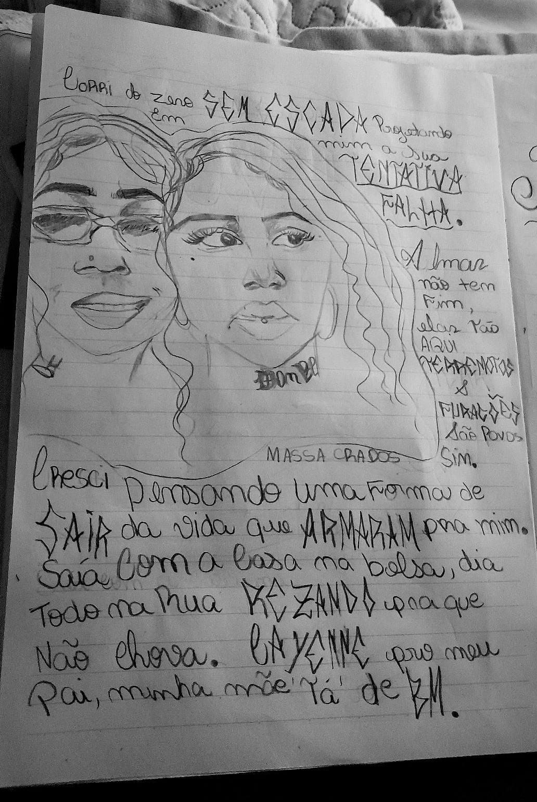

🥇 1º Lugar - Obra-prima da Alana
⭐⭐⭐⭐⭐ “Toca o coração com cada traço.
🥈 2º Lugar - Outra obra linda da Alana

⭐⭐⭐⭐⭐ “Explosão de sentimentos em forma de arte”
🥉 3º Lugar - Esse tal de Van Gogh

⭐⭐⭐⭐ “Interessante, mas prefiro o estilo da Alana.”